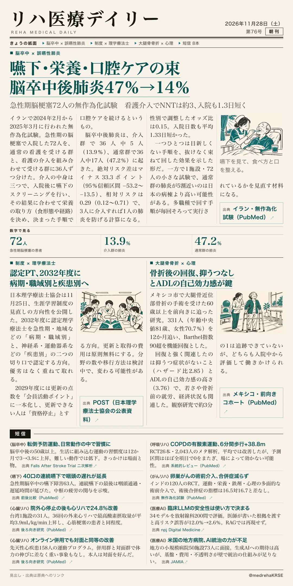
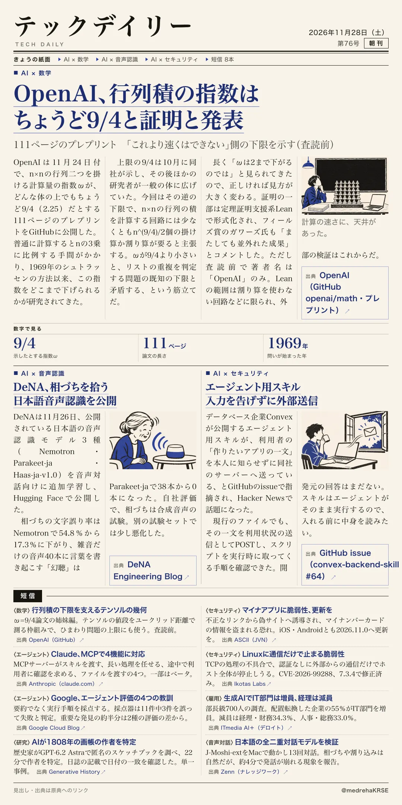

リハ医療デイリー
嚥下・栄養・口腔ケアの束 脳卒中後肺炎47％→14％
急性期脳梗塞72人の無作為化試験 看護介入でNNTは約3、入院も1.3日短く

テックデイリー
OpenAI、行列積の指数はちょうど9/4と証明と発表
111ページのプレプリント 「これより速くはできない」側の下限を示す（査読前）

急性期脳梗塞72人の無作為化試験 看護介入でNNTは約3、入院も1.3日短く

111ページのプレプリント 「これより速くはできない」側の下限を示す（査読前）
